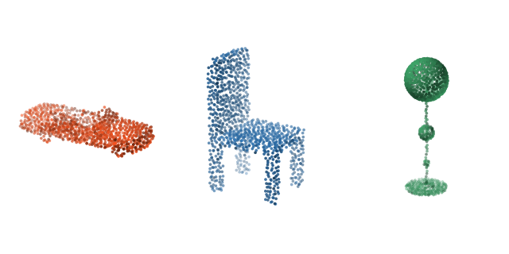
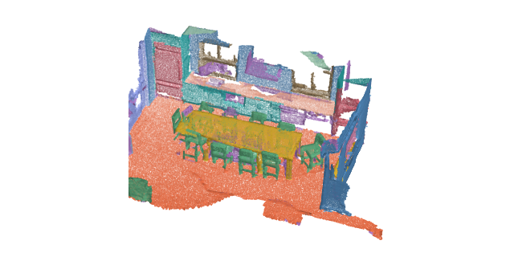
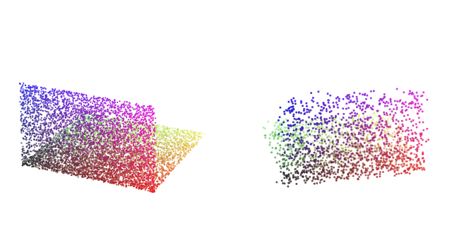
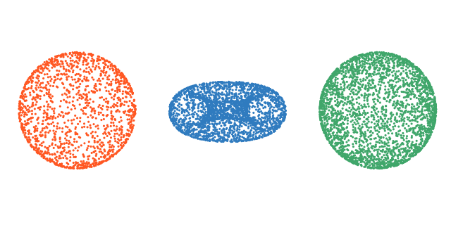
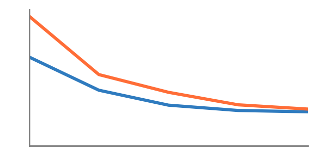
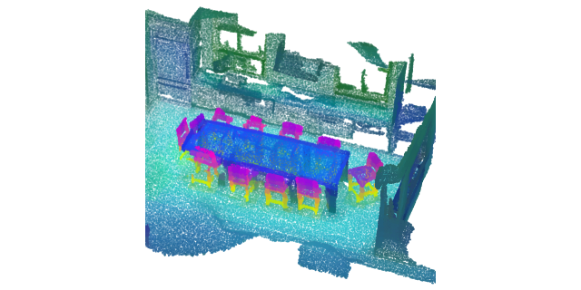
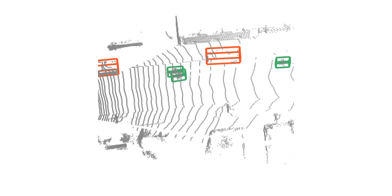

Tutorials¶
Guided, runnable notebooks covering the library end to end. Each page is rendered from a Jupyter
notebook committed under docs/examples/; open it in Colab or download it from the badges at the
top of every tutorial.
The three tiers build on each other. Beginner gets a pretrained model running and explains the conventions everything else assumes. Intermediate puts your own data and your own training loop in the middle. Advanced decodes a driving LiDAR sweep into oriented 3D boxes.
Beginner¶
Start here if you have not run a point cloud model before. The quickstart downloads ModelNet40 on first use; the scene tutorial reads a ScanNet scan, which requires accepting the ScanNet terms of use.
-
Quickstart: classify a point cloud

Load a pretrained model, build a transform pipeline, and classify an object in a few lines.
-

Run per-point semantic segmentation on a full indoor scene with a tiling inferer.
-

Compose dict transforms for sampling, normalization, and augmentation, and inspect each step.
Intermediate¶
See how to use the library with custom data and vanilla torch training loop.
-

Wrap your own point cloud files in a dataset with disk caching and packed-batch collation.
-

Train a classification model from scratch: dataloaders, optimizer, and the evaluation loop.
-
Features and similarity search

Read a frozen encoder's features, query one point, and retrieve whole shapes by descriptor.
Advanced¶
See how to use this library for pratical challenges like 3D object detection.
-
Detect objects in driving LiDAR

Turn one sweep into oriented 3D boxes: voxel encoding, decoding, non-maximum suppression.